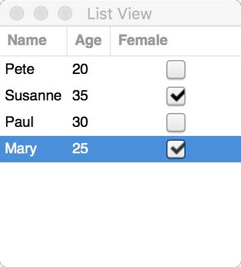

List and Tree Widgets
The GtkTreeView is a very powerful widgets for displaying table-like or hierachical data. Other than the name might indicate the GtkTreeView is used for both lists and trees.
The power of this widget comes with a slightly more complex design that one has to understand when using the widget. The most important thing is that the widget itself does not store the displayed data. Instead there are dedicated GtkListStore and GtkTreeStore containers that will hold the data. The benefit of this approach is that it is possible to decouple the view from the data:
The widget automatically updates when adding, removing or editing data from the store
The widget can sort its data without modifications in the store
Columns can be reordered and resized
Filtering can be used to show only subsets of data
We will in the following introduce both widgets based on small and a more complex example.
List Store
Lets start with a very simple example: A table with three columns representing the name, the age and the gender of a person. Each column must have a specific type. Here, we chose to represent the gender using a boolean value where true represents female and false represents male. We thus initialize the list store using
ls = @GtkListStore(String, Int, Bool)Now we will the store with data
push!(ls,("Peter",20,false))
push!(ls,("Paul",30,false))
push!(ls,("Mary",25,true))If we want so insert the data at a specific position we can use the insert function
insert!(ls, 2, ("Susanne", 35, true))You can use ls like a matrix like container. Calling length and size will give you
julia> length(ls)
4
julia> size(ls)
(4,3)Specific element can be be accessed using
julia> ls[1,1]
"Peter"
julia> ls[1,1] = "Pete"
"Pete"List View
Now we actually want to display our data. To this end we create a tree view object
tv = @GtkTreeView(GtkTreeModel(ls))Then we need specific renderers for each of the columns. Usually you will only need a text renderer, but in our example we want to display the boolean value using a checkbox.
rTxt = @GtkCellRendererText()
rTog = @GtkCellRendererToggle()Finally we create for each column a TreeViewColumn object
c1 = @GtkTreeViewColumn("Name", rTxt, Dict([("text",0)]))
c2 = @GtkTreeViewColumn("Age", rTxt, Dict([("text",1)]))
c3 = @GtkTreeViewColumn("Female", rTog, Dict([("active",2)]))We need to push these column description objects to the tree view
push!(tv, c1, c2, c3)Then we can display the tree view widget in a window
win = @Window(tv, "List View")
showall(win)If you prefer that the columns are resizeable by the user call
for (i,c) in enumerate([c1,c2,c3])
GAccessor.resizable(c,true)
end
Sorting
We next want to make the tree view sortable
for (i,c) in enumerate([c1,c2,c3])
GAccessor.sort_column_id(c,i-1)
endI you now click on one of the column headers, the data will be sorted with respect to the selected column. You can even make the columns reordarable
for (i,c) in enumerate([c1,c2,c3])
GAccessor.reordable(c,i-1)
endSelection
Usually the interesting bit of a list will be the entry being selected. This is done using an additional GtkTreeSelection object that can be retrieved by
selection = GAccessor.selection(tv)One either have single selection or multiple selections. We toggle this by calling
selection = GAccessor.mode(selection,Gtk.GConstants.GtkSelectionMode.MULTIPLE)We will stick with single selction for now and want to know the index of the selected item
julia> ls[selected(selection),1]
"Pete"Since it can happen that no item has been selected at all it is a good idea to put this into an if statement
if hasselection(selection)
# do something with selected(selection)
endSometimes you want to invoke an action of an item is selected. This can be done by
signal_connect(selection, "changed") do widget
if hasselection(selection)
currentIt = selected(selection)
# now you can to something with the selected item
println("Name: ", ls[currentIt,1], " Age: ", ls[currentIt,1])
end
endAnother usefull signal is "row-activated" that will be triggert by a double click of the user.
getting multiple selections still not implemented.
Filtering
A very useful thing is to apply a filter to a list view such that only a subset of data is shown. We can do this using the GtkTreeModelFilter type. It is as the GtkListStore a GtkTreeModel and therefore we can assign it to a tree view. So the idea is to wrap a GtkListStore in a GtkTreeModelFilter and assign that to the tree view.
Next question is how to decide which row of the list store should be shown and which not. We will do this by adding an additional column to the list store that is hidden. The column will be of type Bool and a value true indicates that the entry is to be shown while false indicates the opposite. We make the filtering based on this column by a call to GAccessor.visible_column. The full example now looks like this:
using Gtk
ls = @GtkListStore(String, Int, Bool, Bool)
push!(ls,("Peter",20,false,true))
push!(ls,("Paul",30,false,true))
push!(ls,("Mary",25,true,true))
insert!(ls, 2, ("Susanne",35,true,true))
rTxt = @GtkCellRendererText()
rTog = @GtkCellRendererToggle()
c1 = @GtkTreeViewColumn("Name", rTxt, Dict([("text",0)]), sort_column_id=0)
c2 = @GtkTreeViewColumn("Age", rTxt, Dict([("text",1)]), sort_column_id=1)
c3 = @GtkTreeViewColumn("Female", rTog, Dict([("active",2)]), sort_column_id=2)
tmFiltered = @GtkTreeModelFilter(ls)
GAccessor.visible_column(tmFiltered,3)
tv = @GtkTreeView(GtkTreeModel(tmFiltered))
push!(tv, c1, c2, c3)
selection = GAccessor.selection(tv)
signal_connect(selection, "changed") do widget
if hasselection(selection)
currentIt = selected(selection)
println("Name: ", GtkTreeModel(tmFiltered)[currentIt,1],
" Age: ", GtkTreeModel(tmFiltered)[currentIt,1])
end
end
ent = @GtkEntry()
signal_connect(ent, "changed") do widget
searchText = getproperty(ent, :text, String)
for l=1:length(ls)
showMe = true
if length(searchText) > 0
showMe = showMe && contains(lowercase(ls[l,1]),lowercase(searchText))
end
ls[l,4] = showMe
end
end
vbox = @GtkBox(:v)
push!(vbox,ent,tv)
win = @GtkWindow(vbox, "List View with Filter")
showall(win)You can see that we have added a little search bar such that you can see the filtering in action. It is furthermore important to note that we had to replace ls with GtkTreeModel(tmFiltered) in the selection changed callback since the selection will give an iterator that is only valid in the filtered tree model.
Tree Widget
Here is an example of the tree model in action:
using Gtk
ts = @GtkTreeStore(String)
iter1 = push!(ts,("one",))
iter2 = push!(ts,("two",),iter1)
iter3 = push!(ts,("three",),iter2)
tv = @GtkTreeView(GtkTreeModel(ts))
r1 = @GtkCellRendererText()
c1 = @GtkTreeViewColumn("A", r1, Dict([("text",0)]))
push!(tv,c1)
win = @GtkWindow(tv, "Tree View")
showall(win)
iter = Gtk.iter_from_index(ts, [1])
ts[iter,1] = "ONE"